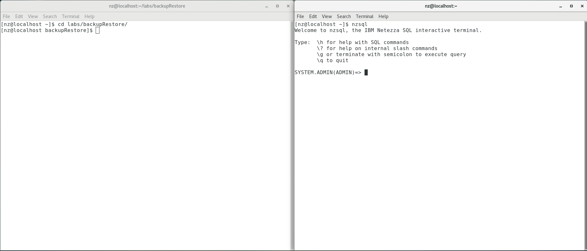
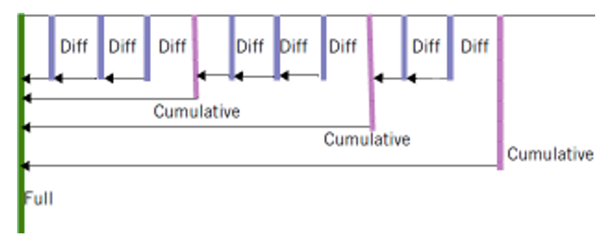

Backup and Restore
Regular backups of your user databases and system catalogs should be taken as part of any data warehouse continuity strategy. One reason to take backups is for disaster recovery, for example in case of a fire in the data center. Another reason is to undo changes such as accidental deletes.
For disaster recovery, backups should be stored in a different physical location than the data center that hosts the data warehouse. IBM Netezza Performance Server provides several backup and restore methods to cover your various requirements.
The Netezza Performance Server backup and restore operations can use network file system locations and several third-party solutions such as IBM Spectrum Protect (formerly Tivoli® Storage Manager), Veritas NetBackup, and EMC NetWorker as destinations.
1 Objectives
In the previous labs we created our LABDB database and loaded the data
into it. In this lab we will set up a QA database that contains a subset
of the tables and data of the full database. To create the tables, we
will use Cross-Database-Access from our QA database to the LABDB
production database.
Next we will use the schema-only function of nzbackup to create a test database that contains the same tables and data objects as the QA database, but no data. Test data will later be added specifically for testing needs. After that we will do a multistep backup of our QA database and test the restore functionality. Testing backups by restoring them is generally a good idea and should be done during the development phase and also at regular intervals. After all, you are never fully sure what a backup contains until you restore it.
Finally, we will backup the system user data and the host data. While a database backup saves all users and groups that are involved in that database, a full user backup may be needed to get the full picture, for example to archive users and groups that are no longer used in any database. Host data should be backed up regularly so you can restore the Performance Server data directory from the host backup without the additional time to restore all of the databases.
2 Lab Virtual Machine
This lab system will be a virtual machine running on Virtual Box. Please see the document on how to install the IPS Virtual Machine for your workstation (Windows or Mac OS).
3 Creating a QA Database
In this lab we will create a QA database called LABDBQA, which contains
a subset of the tables. It will contain all of the data from the NATION
and REGION tables, along with a subset of the data from the CUSTOMER
table. We will create our QA database, connect to it and use CTAS
(Create Table As) tables to create the table copies. We will use
cross-database access to create our CTAS tables from the LABDB database.
This is possible since Netezza Performance Server allows read-only cross
database access if fully qualified names are used.
In this lab we will regularly switch between the operating system prompt
and the NZSQL console. The operating system prompt will be used to
execute the backup and restore commands and review the created files.
The NZSQL console will be used to create the tables and further review
the changes made to the user data using the restore commands.
To make this easier you should open two Terminal sessions (Terminal 1
and Terminal 2), the first one will be used to execute the operating
system commands and it will be referred to as the OS session, in the
second session we will start the NZSQL console. It will be referred to
as the NZSQL session. You can also see which session to use from the
command prompt in the screenshots.

Figure 2 The two terminal sessions for this lab, OS session 1 (Terminal 1) on the left, nzsql session 2 (Terminal 2) on the right
-
Open the first Terminal session. Login to
as user nz with password nz. ( is the default IP address for a local VM, the IP may be different for your Bootcamp) -
Access the lab directory for this lab with the following command:
cd ~/labs/backupRestore/setupLab ./setupLab.shDROP DATABASE ERROR: DROP DATABASE: object LABDBQA does not exist. ERROR: DROP DATABASE: object LABDBTEST does not exist. CREATE DATABASE ERROR: CREATE USER: object LABADMIN already exists as a USER. ALTER USER ALTER DATABASE CREATE TABLE CREATE TABLE CREATE TABLE CREATE TABLE CREATE TABLE CREATE TABLE CREATE TABLE CREATE TABLE Load session of table 'NATION' completed successfully Load session of table 'REGION' completed successfully Load session of table 'CUSTOMER' completed successfully Load session of table 'SUPPLIER' completed successfully Load session of table 'PART' completed successfully Load session of table 'PARTSUPP' completed successfully Load session of table 'ORDERS' completed successfully Load session of table 'LINEITEM' completed successfully -
Open the second Terminal session. Login to
<your-nps-vm-ip-address>as user nz with password nz.<your-nps-vm-ip-address>is the default IP address for a local VM, the IP may be different for your Bootcamp) -
Access the lab directory for this lab with the same change directory command:
cd ~/labs/backupRestore/[nz@localhost backupRestore]$ -
Start the nzsql console using the nzsql command:
nzsqlWelcome to nzsql, the IBM Netezza SQL interactive terminal. Type: \h for help with SQL commands \? for help on internal slash commands \g or terminate with semicolon to execute query \q to quit SYSTEM.ADMIN(ADMIN)=>Info
This will connect you to the
SYSTEMdatabase with theADMINuser. These are the default settings stored in the environment variables of the NZ user. -
Create the empty QA database using the
CREATE DATABASEcommand:create database LABDBQA;CREATE DATABASE -
Connect to the QA database using the
\ccommand.\c LABDBQAYou are now connected to database LABDBQA. -
Create a full copy of the
REGIONtable from theLABDBdatabase:create table region as select * from labdb.admin.region;INSERT 0 4With the
CTASstatement, we created a localREGIONtable in the currently connectedLABDBQAdatabase with the same definition and content as theREGIONtable from theLABDBdatabase. TheCREATE TABLE ASstatement is one of the most flexible administrative tools for an IBM Netezza Performance Server administrator.We can easily access tables of databases we are currently not connected to, but only for read operations. We cannot insert data into a database we are not connected to.
-
Verify that the content has been copied over correctly. View the original data in the
LABDBdatabase:select * from labdb.admin.region order by 1;R_REGIONKEY | R_NAME | R_COMMENT -------------+---------------------------+----------------------------- 1 | na | north america 2 | sa | south america 3 | emea | europe, middle east, africa 4 | ap | asia pacific (4 rows)You should see four rows in the result set.
To access a table from a foreign database, we need to have the fully qualified name. Notice that we include the schema name between the two dots. Schemas are fully supported in Performance Server and since each table name needs to be unique in a given database it should be included.
-
Now let's compare that to our local
REGIONtable using theSELECTstatement:select * from labdbqa.admin.region order by 1;R_REGIONKEY | R_NAME | R_COMMENT -------------+---------------------------+----------------------------- 1 | na | north america 2 | sa | south america 3 | emea | europe, middle east, africa 4 | ap | asia pacific (4 rows)You should see the same rows as before.
-
Now copy over the
NATIONtable:create table nation as select * from labdb.admin.nation;INSERT 0 14 -
Finally, we will copy over a subset of our
CUSTOMERtable, copying only the rows from the automobile market segment into the QA database:create table customer as select * from labdb.admin.customer where c_mktsegment = 'AUTOMOBILE';INSERT 0 29752Notice that this inserts 29,752 rows into the QA customer table, roughly a fifth of the original table.
-
Next create a view
NATIONSBYREGIONwhich returns a list of nation names with their corresponding region names. This is used in a couple of applications:create view nationsbyregions as select r_name, n_name from nation, region where r_regionkey = n_regionkey;CREATE VIEW -
Let's have a look at what the view returns:
select * from nationsbyregions order by 1;R_NAME | N_NAME ---------------------------+--------------------------- ap | australia ap | macau ap | japan ap | hong kong ap | new zealand emea | united arab emirates emea | portugal emea | united kingdom emea | south africa na | united states na | canada sa | brazil sa | guyana sa | venezuela (14 rows)You should get a list of all nations and their corresponding region name.
Views are a very convenient way to hide SQL complexity. They can also be used to implement column level security by creating views of tables that only contain a subset of columns. They are fully supported by Netezza Performance Server.
-
Verify the created tables with the display tables command:
\dtList of relations Schema | Name | Type | Owner --------+----------+-------+------- ADMIN | CUSTOMER | TABLE | ADMIN ADMIN | NATION | TABLE | ADMIN ADMIN | REGION | TABLE | ADMIN (3 rows)Notice that the QA database only contains the three tables we just created.
Next create a QA user and make them owner of the database.
-
Create a user
qauser:create user qauser;CREATE USER -
Make the id
qauserowner of the QA database calledlabdbqa:alter database labdbqa owner to qauser;ALTER DATABASE
We have successfully created our QA database using cross access database CTAS statements. Our QA database contains three tables and a view, and we have a user that is the owner of this database. In the next section we will use backup and restore to create an empty copy of the QA database for the test database.
4 Creating the Test Database
In this section, we will use schema-only backup and restore to create an empty copy of the QA database as test database. This will not contain any data since the developers will fill it with test-specific data. Schema only backup is a convenient way to recreate databases without user data.
We need to specify three parameters to the nzbackup command,
the database we want to backup, the file system location where we want
to save the backup files to and the -schema-only parameter to
specify that user data shouldn't be backed up.
Warning
Normally backups should be saved on a remote network file server, not on the host hard disks. Not only is this essential for disaster recovery, but the host hard disks are small, optimized for speed and not intended to hold large amount of data. They are strictly intended for Netezza Performance Server software and operational data.
-
Switch to the OS session and create the schema only backup of our QA database:
nzbackup -schema-only -db labdbqa -dir /tmp/bkschemaBackup of schema for database labdbqa completed successfully.Later in this Lab we will have a deeper look at the files and the logs the backup command created.
We can restore a database to a different database name. We simply need to specify the new name in the
-dbparameter and the old name in the-sourcedbparameter. -
Now we will restore the test database from this backup:
nzrestore -dir /tmp/bkschema -db labdbtest -sourcedb labdbqa -schema-onlyRestore of schema for database labdbtest completed successfully. -
In the nzsql session we will verify that we successfully created an empty copy of our database. See all available databases with the following command:
\l\lList of databases DATABASE | OWNER -----------+---------- LABDB | LABADMIN LABDBQA | QAUSER LABDBTEST | QAUSER SYSTEM | ADMIN (4 rows)Notice that the
LABDBTESTdatabase was successfully created and the privilege information has been copied as well, the owner isQAUSER, which is the same as the owner of theLABDBQAdatabase. -
We do not want the QA user being the owner of the test database, change the owner to
ADMINfor now:alter database labdbtest owner to admin;ALTER DATABASE -
Now let's check the contents of the test database. First connect to the database with the
\ccommand, and then display the database objects with the\dcommand\c labdbtestYou are now connected to database labdbtest. -
Verify the test database contains all the objects of the QA database:
\d\dList of relations Schema | Name | Type | Owner --------+------------------+-------+------- ADMIN | CUSTOMER | TABLE | ADMIN ADMIN | NATION | TABLE | ADMIN ADMIN | NATIONSBYREGIONS | VIEW | ADMIN ADMIN | REGION | TABLE | ADMIN (4 rows)You will see the three tables and the view we created.
Performance Server Backup saves all database objects including views, stored procedures, and more. It also includes all users, groups and privileges that refer to the database included in the backup.
-
Since we used the
-schema-onlyoption we have not copied any data. Verify this for theNATIONtable using theSELECTcommand:select * from nation;N_NATIONKEY | N_NAME | N_REGIONKEY | N_COMMENT -------------+--------+-------------+----------- (0 rows)Notice the result set is empty as expected. The schema-only backup option is a convenient way to save your database schema and to create empty copies of your database. It will create a full 1:1 copy of the original database without the user data. You could also restore the database to a different Netezza Performance Server. This would only require that the backup server location is accessible from both Netezza Performance Servers. The target server can be another Netezza Performance Server, which can be a different model type or have a later software release.
5 Backing up and Restoring a Database
Netezza Performance Server's user data backup will create a backup of the complete database, including all database objects and user data. Even global objects like users and privileges that are used in the database are backed up. This makes backup and restore a very easy and straightforward process.
Since Netezza Performance Server doesn't have a transaction log, point in time restore is not possible. Therefore, frequent backups are advisable. NPS supports full, differential and cumulative backups that allow easy and fast regular data backups. An example backup strategy would be monthly full backups, weekly cumulative backups and daily differentials.
Netezza Performance Server is not intended to be used nor has been designed as an OLTP database, therefore this should provide enough backup flexibility for most situations. For example, run differential backups after the daily ETL processes that feed the warehouse.

Figure 3 A typical backup strategy
In this section we will create a backup of our QA database. We will then do a differential backup and then do a restore.
Warning
Our VMWare environment has some specific restrictions that only allow the restoration of up to 2 increments. The labs will work correctly but don't be surprised if you encounter errors during restore operations of more than 2 increments.
5.1 Backing up the Database
Netezza Performance Server's backup is organized in so called backup sets. Every new full backup creates a new backup set. Differential and cumulative backups are added to the last backup set by default. They can also be added to a different backup set as well. In this section we will switch between the two Terminal sessions.
-
In the OS session execute the following command to create a full backup of the QA database:
nzbackup -db labdbqa -dir /tmp/bk1 /tmp/bk2Backup of database labdbqa to backupse 20210331133512 completed successfully.This command will create a full user data backup of the
LABDBQAdatabase.Each backup set has a unique id that can be later used to access it. By default, the last active backup set is used for restore and differential backups.
Info
In this lab we split up the backup between two file system locations. You can specify up to 16 file system locations after the
-dirparameter. Alternatively, you could use a directory list file as well with the-dirfileoption. Splitting up the backup between different file servers will result in higher backup performance. -
In the NZSQL session we will now add a new row to the
REGIONtable. First connect to the QA database using the\ccommand:\c labdbqaYou are now connected to database labdbqa. -
Now add a new entry for the north pole to the
REGIONtable:insert into region values (5, 'np', 'north pole');INSERT 0 1Now create a differential backup with the -differential option. This will create a new entry to the backup set we created previously only containing the differences since the full backup.
-
In the OS session create a differential backup:
nzbackup -db labdbqa -dir /tmp/bk1 /tmp/bk2 -differentialBackup of database labdbqa to backupset 20210331133512 completed successfully.Notice that the backup set id hasn't changed.
-
In the
NZSQLsession add the south pole to theREGIONtable:insert into region values (6, 'sp', 'south pole');INSERT 0 1You have now one full backup with the original 4 rows in the
REGIONtable, a differential backup that has additionally the north pole entry and a current state that has in addition to that the south pole region.
5.2 Verifying the Backups
In this section we will have a closer look at the files and logs that are created during the Netezza Performance Server Backup process.
-
In the OS session display the backup history of your Netezza Performance Server.
nzbackup -historyDatabase Backupset Seq # OpType Status Date Log File -------- -------------- ----- ------- --------- ------------------- ------------------------------ LABDBQA 20210331133344 1 NO DATA COMPLETED 2021-03-31 06:33:44 backupsvr.30436.2021-03-31.log LABDBQA 20210331133512 1 FULL COMPLETED 2021-03-31 06:35:12 backupsvr.30648.2021-03-31.log LABDBQA 20210331133512 2 DIFF COMPLETED 2021-03-31 06:36:00 backupsvr.30859.2021-03-31.logNetezza Performance Server keeps track of all backups and saves them in the system catalog. This is used for differential backups and it is also integrated with the Groom process. Since Performance Server doesn't use transaction logs it needs logically deleted rows for differential backups. By default, Groom doesn't remove a logically deleted row that has not been backed up yet. Therefore, the Groom process is integrated with the backup history. We will explain this in more detail in the Transaction and Groom Labs.
We have done three backups on our server. One backup set contains the schema only backup, two backups for the second backup set, one full backup and one differential. Let's have a closer look at the log that has been generated for the last differential backup.
-
In the OS session, switch to the log directory of the
backupsrvprocess, which is the process responsible for backing up data:cd /nz/kit/log/backupsvr[nz@localhost backupsvr]$Info
The
/nz/kit/logdirectory contains the log directories for all Performance Server processes. -
Display the end of the log for the last differential backup process. You will need to replace the
XXXvalues with the actual values of your log. You can cut and paste the log name from the history output above. We are interested in the last differential backup process:tail backupsvr.xxxxx.xxxx-xx-xx.log2021-03-31 06:36:04.879861 PDT (30859) Info: [30882] Postgres client pid: 30884, session: 16111 2021-03-31 06:36:04.883271 PDT (30859) Info: [30883] Postgres client pid: 30885, session: 16112 2021-03-31 06:36:04.892053 PDT (30859) Info: Capturing deleted rows 2021-03-31 06:36:04.892145 PDT (30859) Info: Backing up table ADMIN.REGION 2021-03-31 06:36:06.115265 PDT (30859) Info: Wrote 5569 bytes of metadata and udx files in less than a second 2021-03-31 06:36:06.115362 PDT (30859) Info: Operation committed 2021-03-31 06:36:06.115381 PDT (30859) Info: Wrote 72 bytes in less than one second to location 1 2021-03-31 06:36:06.115384 PDT (30859) Info: Wrote 193 bytes in less than one second to location 2 2021-03-31 06:36:06.115434 PDT (30859) Info: Backup of database labdbqa to backupset 20210331133512 completed successfully. 2021-03-31 06:36:06.123928 PDT (30859) Info: NZ-00023: --- program 'backupsvr' (30859) exiting on host 'localhost.localdomain' ...You can see that the process backed up the three tables
REGION,NATIONandCUSTOMERand wrote the result to two different locations. You also see the amount of data written to these locations. Since we only added a single row the amount of data is tiny. If you look at the log of the full backup you will see a lot more data being written. -
Now let's have a look at the files that are created during the backup process, enter the first backup location:
cd /tmp/bk1[nz@localhost bk1]$ -
Display the contents of the directory using
ls -l.ls -ldrwxrwxrwx. 3 nz nz 35 Mar 31 04:43 NetezzaThe directory contains all backup sets for all Performance Servers that use this backup location. If you need to move the backup you always have to move the complete folder.
-
Change directories into the Netezza folder, with cd Netezza, and display the contents with
ls -l.cd Netezza ls -ltotal 0 drwxrwxrwx. 3 nz nz 21 Mar 31 04:43 localhost.localdomainUnder the main Netezza folder you will find sub folders for each Netezza host that is backed up to this location. In our case we only have one Netezza host called "netezza". But if your company had multiple Netezza hosts you would find them here.
-
Change directories to the localhost.localdomain folder with the cd command and display the contents with `ls -l:
cd localhost.localdomain ls -ldrwxrwxrwx. 3 nz nz 28 Mar 31 04:43 LABDBQA -
Change directories to the
LABDBQAfolder with cd and display the contents with ls -l:cd LABDBQA/ ls -ltotal 0 drwxrwxrwx. 4 nz nz 24 Apr 5 11:44 20210331133512You will find all the databases of the host that have been backed up to this location, in our case the QA database.
In this folder you can see all the backup sets that have been saved for this database. Each backup set corresponds to one full backup plus an optional set of differential and cumulative backups. Note that we backed up the schema to a different location, so we only have one backup set in here.
-
Change directories to the backup set folder with cd
and display the contents with ls -l:cd 20210331133512 / ls -ltotal 0 drwxrwxrwx. 3 nz nz 18 Mar 31 06:35 1 drwxrwxrwx. 3 nz nz 18 Mar 31 04:36 2Under the backup set are folders for each backup that has been added to that backup set. "1" is always the full backup followed by additional differential or cumulative backups. We will later use these numbers to restore our database to a specific backup of the backup set.
-
Change directories to the full backup with cd and display the contents with
ls -l:cd 1 ls -ltotal 0 drwxrwxrwx. 4 nz nz 28 Mar 31 06:43 FULLAs expected, it's a full backup.
-
Change directories to the
FULLfolder with cd and display the contents withls -l:cd FULL ls -ltotal 0 drwxrwxrwx. 2 nz nz 94 Mar 31 06:35 data drwxrwxrwx. 3 nz nz 92 Mar 31 06:35 mdThe data folder contains the user data, the md folder contains metadata including the schema definition of the database.
-
Change directories to the data folder with the cd command and display detailed information with
ls -l:cd data ls -ltotal 8 total 1128 -rw-------. 1 nz nz 337 Mar 31 04:43 202287.full.2.1 -rw-------. 1 nz nz 449 Mar 31 04:43 202289.full.2.1 -rw-------. 1 nz nz 1140681 Mar 31 04:43 202291.full.2.1 -rw-------. 1 nz nz 1 Mar 31 04:43 data.marker -
Now switch to the md folder using cd ../md and display the contents with
ls -l:cd ../md ls -ltotal 1120 -rw-------. 1 nz nz 338 Mar 31 06:35 200580.full.2.1 -rw-------. 1 nz nz 451 Mar 31 06:35 200582.full.2.1 -rw-------. 1 nz nz 1132441 Mar 31 06:35 200584.full.1.1 -rw-------. 1 nz nz 1 Mar 31 06:35 data.markerThis folder contains information about the files that contribute to the backup and the schema definition of the database in the schema.xml
-
Let's have a quick look inside the schema.xml file:
more schema.xml<ARCHIVE archive_major="4" archive_minor="0" archive_subminor="1" product_ver="Release 11.0.3.1 [Build 0]" catalog_ver="3.1792" hostname="localhost.localdomain" dataslices="1" createtime="2020-04-05 18:42:23" lowercase="f" objidcycle="0" hpfrel="3.2" model="sim" family="sim" platform="sim"> <OPERATION backupset="20200405184220" increment="1" predecessor="0" optype="0" dbname="LABDBQA"/> <DATABASE name="LABDBQA" schema="" owner="QAUSER" oidhi="0" oid="200820" classhi="0" class="0" delimited="f" sdelim="f" odelim="f" charset="LATIN9" collation="BINARY" collecth ist="t" replcsn="0" replsrcid="0" repldbid="0" replsetid="0" defschema="ADMIN" defschemadelim="f" dbtrackchanges="1"> <SCHEMA name="ADMIN" schema="" owner="ADMIN" oidhi="0" oid="200819" classhi="0" class="0" delimited="f" sdelim="f" odelim="f" path=""/> <STATISTICS column_count="15"/> <TABLE ver="2" name="REGION" schema="ADMIN" owner="ADMIN" oidhi="0" oid="200821" classhi="0" class="4905" delimited="f" sdelim="f" odelim="f" rowsecurity="f" origoidhi="0" ori goid="200821" excludebackup="0"> <COLUMN name="R_REGIONKEY" schema="" owner="" oidhi="0" oid="203501" classhi="0" class="0" delimited="f" sdelim="t" odelim="t" seq="1" type="INTEGER" typeno="23" typemod="-1" notnull="t"/> <COLUMN name="R_NAME" schema="" owner="" oidhi="0" oid="203502" classhi="0" class="0" delimited="f" sdelim="t" odelim="t" seq="2" type="CHARACTER(25)" typeno="1042" typemod="4 1" notnull="t"/> <COLUMN name="R_COMMENT" schema="" owner="" oidhi="0" oid="203503" classhi="0" class="0" delimited="f" sdelim="t" odelim="t" seq="3" type="CHARACTER VARYING(152)" typeno="1043 " typemod="168" notnull="f"/> <DISTRIBUTION seq="1" attnum="1"/> </TABLE> <TABLE ver="2" name="NATION" schema="ADMIN" owner="ADMIN" oidhi="0" oid="200823" classhi="0" class="4905" delimited="f" sdelim="f" odelim="f" rowsecurity="f" origoidhi="0" ori goid="200823" excludebackup="0"> <COLUMN name="N_NATIONKEY" schema="" owner="" oidhi="0" oid="203510" classhi="0" class="0" delimited="f" sdelim="t" odelim="t" seq="1" type="INTEGER" typeno="23" typemod="-1" notnull="t"/> <COLUMN name="N_NAME" schema="" owner="" oidhi="0" oid="203511" classhi="0" class="0" delimited="f" sdelim="t" odelim="t" seq="2" type="CHARACTER(25)" typeno="1042" typemod="4 1" notnull="t"/> <COLUMN name="N_REGIONKEY" schema="" owner="" oidhi="0" oid="203512" classhi="0" class="0" delimited="f" sdelim="t" odelim="t" seq="3" type="INTEGER" typeno="23" typemod="-1" notnull="t"/> <COLUMN name="N_COMMENT" schema="" owner="" oidhi="0" oid="203513" classhi="0" class="0" delimited="f" sdelim="t" odelim="t" seq="4" type="CHARACTER VARYING(152)" typeno="1043 " typemod="168" notnull="f"/> <DISTRIBUTION seq="1" attnum="1"/> </TABLE> <TABLE ver="2" name="CUSTOMER" schema="ADMIN" owner="ADMIN" oidhi="0" oid="200825" classhi="0" class="4905" delimited="f" sdelim="f" odelim="f" rowsecurity="f" origoidhi="0" o rigoid="200825" excludebackup="0"> <COLUMN name="C_CUSTKEY" schema="" owner="" oidhi="0" oid="203520" classhi="0" class="0" delimited="f" sdelim="t" odelim="t" seq="1" type="INTEGER" typeno="23" typemod="-1" no tnull="t"/> <COLUMN name="C_NAME" schema="" owner="" oidhi="0" oid="203521" classhi="0" class="0" delimited="f" sdelim="t" odelim="t" seq="2" type="CHARACTER VARYING(25)" typeno="1043" ty pemod="41" notnull="t"/> <COLUMN name="C_ADDRESS" schema="" owner="" oidhi="0" oid="203522" classhi="0" class="0" delimited="f" sdelim="t" odelim="t" seq="3" type="CHARACTER VARYING(40)" typeno="1043" typemod="56" notnull="t"/> <COLUMN name="C_NATIONKEY" schema="" owner="" oidhi="0" oid="203523" classhi="0" class="0" delimited="f" sdelim="t" odelim="t" seq="4" type="INTEGER" typeno="23" typemod="-1" notnull="t"/> <COLUMN name="C_PHONE" schema="" owner="" oidhi="0" oid="203524" classhi="0" class="0" delimited="f" sdelim="t" odelim="t" seq="5" type="CHARACTER(15)" typeno="1042" typemod=" 31" notnull="t"/> <COLUMN name="C_ACCTBAL" schema="" owner="" oidhi="0" oid="203525" classhi="0" class="0" delimited="f" sdelim="t" odelim="t" seq="6" type="NUMERIC(15,2)" typeno="1700" typemod ="983058" notnull="t"/> <COLUMN name="C_MKTSEGMENT" schema="" owner="" oidhi="0" oid="203526" classhi="0" class="0" delimited="f" sdelim="t" odelim="t" seq="7" type="CHARACTER(10)" typeno="1042" type mod="26" notnull="t"/> <COLUMN name="C_COMMENT" schema="" owner="" oidhi="0" oid="203527" classhi="0" class="0" delimited="f" sdelim="t" odelim="t" seq="8" type="CHARACTER VARYING(117)" typeno="1043 " typemod="133" notnull="t"/> <DISTRIBUTION seq="1" attnum="1"/> </TABLE> <VIEW name="NATIONSBYREGIONS" schema="ADMIN" owner="ADMIN" oidhi="0" oid="200827" classhi="0" class="0" delimited="f" sdelim="f" odelim="f" definition="SELECT REGION.R_NAME, N ATION.N_NAME FROM ADMIN.NATION, ADMIN.REGION WHERE (REGION.R_REGIONKEY = NATION.N_REGIONKEY);"/> <USER name="QAUSER" schema="" owner="ADMIN" oidhi="0" oid="200829" classhi="0" class="0" delimited="f" sdelim="f" odelim="f" pwd="" rowsetlimit="0" validuntil="" sesstimeout=" 0" qrytimeout="0" defp="NONE" maxp="NONE" pwdinv="f" pwdlastchged="" resrcgrpid="4901" crossjoin="NULL" collecthist="0" accesstime="0" concursess="0" seclabel="PUBLIC::" audit cat="NONE" useauth="0"> </USER> <RSG username="QAUSER" userdelim="f" groupname="PUBLIC" groupdelim="f"/> </DATABASE> </ARCHIVE>As you see this file contains a full XML description of your database, including table definition, views, users etc.
-
Switch back to the lab folder:
cd ~/labs/backupRestore/[nz@localhost backupRestore]$You should now have a pretty good understanding of the Performance Server Backup process. In the next section we will demonstrate the restore functionality.
5.3 Restoring the Database
In this section, we will restore our database to the first increment and then we will upgrade our database to the next increment.
Performance Server allows you to return a database to a specific increment in your backup set. If you want to do an incremental restore, the database must be locked. Tables can be queried but not changed until the database is in the desired state and unlocked.
-
In the
NZSQLsession we will drop the QA database and the QA user. First connect to theSYSTEMdatabase:\c SYSTEMYou are now connected to database SYSTEM. SYSTEM.ADMIN(ADMIN)=> -
Now drop the QA database:
DROP DATABASE LABDBQA;DROP DATABASE -
Now drop the QA User:
DROP USER QAUSER;DROP USER -
Verify that the QA database has been deleted by displaying the databases using the
\lcommand. You will see that theLABDBQAdatabase has been removed:\lList of databases DATABASE | OWNER -----------+---------- LABDB | LABADMIN LABDBTEST | ADMIN SYSTEM | ADMIN (3 rows) -
In the OS session, restore the database to the first increment:
nzrestore -db labdbqa -dir /tmp/bk1 /tmp/bk2 -increment 1 -lockdb trueRestore of increment 1 from backupset 20210331133512 to database 'labdbqa' committed.Notice that we have specified the increment with the
-incrementoption. In our case this is the first full backup in our backup set. We did not have to specify a backup set, by default the most recent one is used. Since we are not sure which increment we want to restore the database to, we have to lock the database with the-lockdboption. This allows only read-only access until the desired increment has been restored. -
In the
NZSQLsession, verify that the database has been recreated with\l\lList of databases DATABASE | OWNER -----------+---------- LABDB | LABADMIN LABDBQA | QAUSER LABDBTEST | ADMIN SYSTEM | ADMIN (4 rows)Notice the
LABDBQAdatabase is there. You can also see that the ownerQAUSERhas been recreated and is again the database owner. -
Connect to the
LABDBQAdatabase with the\ccommand\c labdbqaNOTICE: Database 'LABDBQA' is available for read-onlyYou are now connected to database labdbqa.
Notice that
LABDBQAdatabase is currently in read-only mode. -
Verify the contents of the
REGIONtable from theLABDBQAdatabase:select * from region order by 1;R_REGIONKEY | R_NAME | R_COMMENT -------------+---------------------------+----------------------------- 1 | na | north america 2 | sa | south america 3 | emea | europe, middle east, africa 4 | ap | asia pacific (4 rows)Notice that we have returned the database to the point in time after the first full backup. There is no north or south pole in the R_COMMENT column.
-
Try to insert a row to verify the read only mode:
insert into region values (5, 'np', 'north pole');ERROR: Database 'LABDBQA' is available for read-only (command ignored)As expected, this is prohibited until we unlock the database.
-
In the OS session, apply the next increment to the database
nzrestore -db labdbqa -dir /tmp/bk1 /tmp/bk2 -increment next -lockdb trueRestore of increment 2 from backupset 20210331133512 to database 'labdbqa' committed.Notice that we now apply the second increment to the database.
-
Since we do not need to load any more increments, we can now unlock the database:
nzrestore -db labdbqa -dir /tmp/bk1 /tmp/bk2 -unlockdb[nz@localhost backupRestore]$After the database unlock, we cannot apply any further increments to this database. To jump to a different increment, we would need to start from the beginning.
-
In the nzsql session we will look at the
REGIONtable again:select * from region order by 1;R_REGIONKEY | R_NAME | R_COMMENT -------------+---------------------------+----------------------------- 1 | na | north america 2 | sa | south america 3 | emea | europe, middle east, africa 4 | ap | asia pacific 5 | np | north pole (5 rows)Notice that we have added the north pole region, which was created before the first differential backup.
-
Verify that the database is unlocked and ready for use again by adding a new set of customers to the
CUSTOMERtable. In addition to the Automobile users we want to add the machinery users from the main database:insert into customer select * fromlabdb.admin.customer where c_mktsegment = 'MACHINERY';INSERT 0 29949Notice that we now can use the database in a normal fashion again.
-
We had around 30000 customers before, verify that the new user set has been added successfully:
select count(*) from customer;COUNT ------- 59701 (1 row)You will see that we now have around 60000 rows in the
CUSTOMERtable.
You have now done a full restore cycle for the database and applied a full and incremental backup to your database. In the next section we will demonstrate single table restore and the ability to restore from any backup set.
5.4 Single Table Restore
In this chapter we will demonstrate the targeted restore of a subset of tables from a backup set. We will also demonstrate how to restore from a specific older backup set.
-
First, we will create a second backup set with the new customer data. In the OS session execute the following command:
nzbackup -db labdbqa -dir /tmp/bk1 /tmp/bk2Backup of database labdbqa to backupset 20210331134349 completed successfully.Notice that this is a full database backup because we took the defaults. In this case Netezza Performance Server automatically creates a new backup set.
-
We want to return the
CUSTOMERtable to the previous condition. But we do not want to change theREGIONor theNATIONtables. To do this we need to know the backup set id of the previous backup set. To do this execute the history command again:nzbackup -historyDatabase Backupset Seq # OpType Status Date Log File --------- -------------- ----- ------- --------- ------------------- ------------------------------ (LABDBQA) 20210331133344 1 NO DATA COMPLETED 2021-03-31 06:33:44 backupsvr.30436.2021-03-31.log (LABDBQA) 20210331133512 1 FULL COMPLETED 2021-03-31 06:35:12 backupsvr.30648.2021-03-31.log (LABDBQA) 20210331133512 2 DIFF COMPLETED 2021-03-31 06:36:00 backupsvr.30859.2021-03-31.log LABDBQA 20210331134349 1 FULL COMPLETED 2021-03-31 06:43:49 backupsvr.31972.2021-03-31.logWe now see three different backup sets, the schema only backup, the two step backupset and the new full backupset. Remember the backup set id of the two step backupset.
-
To return only the
CUSTOMERtable to its condition of the second backup set, we can do a table level restore with the following command:nzrestore -db labdbqa -dir /tmp/bk1 /tmp/bk2 -backupset 20210331133512 -tables CUSTOMERError: Specify -droptables to force drop of tables in the -tables list.This command will only restore the tables in the -tables option. If you want to restore multiple tables, you can simply write them in a list after the option.
We use the
-backupsetoption to specify a specific backup set. Remember to replace the id with the value you retrieved with the history command.Info
Notice that the table name needs to be case sensitive. This is in contrast to the database name. You will get the error "Performance Server cannot restore a table that exists in the target database. You can either drop the table before restoring it or use the -droptables option."
-
Repeat the previous command with the added -droptables option:
nzrestore -db labdbqa -dir /tmp/bk1 /tmp/bk2 -backupset 20210331133512 -tables CUSTOMER -droptables[Restore Server] : Dropping TABLE 'CUSTOMER' [Restore Server] : Dropping TABLE 'CUSTOMER' Restore of increment 1 from backupset 20210331133512 to database 'labdbqa' committed. Restore of increment 2 from backupset 20210331133512 to database 'labdbqa' committed.Notice that the target table was dropped before the restore happened and the specified backup set was used. Since we didn't stipulate a specific increment, the full backup set has been applied with all increments. Also, the table is automatically unlocked after the restore process finishes.
-
Finally let's verify that the restore worked as expected, in the NZSQL console count the rows of the customer table again:
select count(*) from customer;COUNT ------- 29752 (1 row)You will see that we are back to approximately 30000 rows. This means that we have backed out the most recent changes.
In this chapter you executed a single table restore and you did a restore from a specific backup set.
6 Backing up User Data and Host Data
In the previous chapters you have learned to backup Performance Server databases. This backs up all the database objects that are used in the database and the user data. These are the most critical components to back up in a Performance Server. They will allow you to recreate your databases even if you switch to a completely new Netezza Performance Server.
There are two other things that should be backed up:
-
The global user information.
-
The host data
In this chapter you will do a backup of these components, so you would be able to revert your IBM Netezza Performance Server to the exact condition it was in before the backup.
6.1 User Data Backup
Users, groups, and privileges that are not used in databases will not be backed up by the user data backup. To be able to revert a Performance Server completely to its original condition you need to have a backup of the global user information as well, to capture for example administrative users that are not part of any database.
This is done with the -users option of the nzbackup
command:
-
In the OS session execute the following command.
nzbackup -dir /tmp/bk1 /tmp/bk2 -usersBackup of global objects completed successfully.
This will create a backup of all Users, Groups and Privileges. Restoring it will not delete any users, instead it will only add missing Users, Groups and Privileges, so it doesn't need to be fully synchronized with the user data backup. You can even restore an older user backup without fear of destroying information.
6.2 Host Data Backup
Until now we have always backed up database content. This is essentially
catalog and user data that can be applied to a new Performance Server.
Performance Server also provides the functionality to backup and restore
host data. This is essentially the data in the /nz/data and /export/nz
directories of the host server.
There are two reasons for regularly backing up host data. The first is a host crash. If the data on your system is intact but the host file system has been destroyed, you can recreate all databases from the user backup. In very large systems this might take a long time. It is much easier to just restore the host information and reconnect to the undamaged user tables.
The second reason is that the host data contains configuration information, log and plan files etc. that are not saved by the user backup. If you changed the system configuration that information would be lost. Therefore, it is advisable to regularly backup host data.
-
To backup the host data execute the following command in the OS session:
nzhostbackup /tmp/hostbackupStarting host backup. System state is 'online'. Pausing the system ... Checkpointing host catalog ... Archiving system catalog ... Resuming the system ... Host backup completed successfully. System state is 'online'.As you can see, the system was paused for the duration of the host backup but is automatically resumed after the backup is successful. Also notice that the host backup is done with the
nzhostbackupcommand instead of the standardnzbackupcommand. -
Let's have a look at the created file:
ls -l /tmptotal 389308 drwxrwxrwx. 3 nz nz 21 Apr 5 11:42 bk1 drwxrwxrwx. 3 nz nz 21 Apr 5 11:42 bk2 drwxrwxrwx. 3 nz nz 21 Apr 5 11:37 bkschema -rw-r--r--. 1 root root 36730 Apr 6 03:54 cyclops_run.log -rw-------. 1 nz nz 398447694 Apr 6 03:52 hostbackup ...Notice that a backup file has been created. It's a compressed file containing the system catalog and Performance Server host information. If possible, host backups should be done regularly. If an old host backup is restored, there might be some orphaned tables. Orphan tables are tables that were created after the host backup and consume disk space but are not registered in the system catalog anymore. During host restore, Performance Server will create a script to clean up these orphaned tables.
Congratulations on finishing the chapter!
Congratulations you have finished the Backup & Restore lab and you have had a chance to see all components of a successful Performance Server backup strategy. In this lab, we used the file system backup. In a real Performance Server backup and restore operation, we would most likely use third-party solutions such as IBM Spectrum Protect (formerly Tivoli® Storage Manager), Veritas NetBackup, and EMC NetWorker as destinations.
For further information regarding the setup steps please refer to the IBM Knowledge Center for Netezza Performance Server.